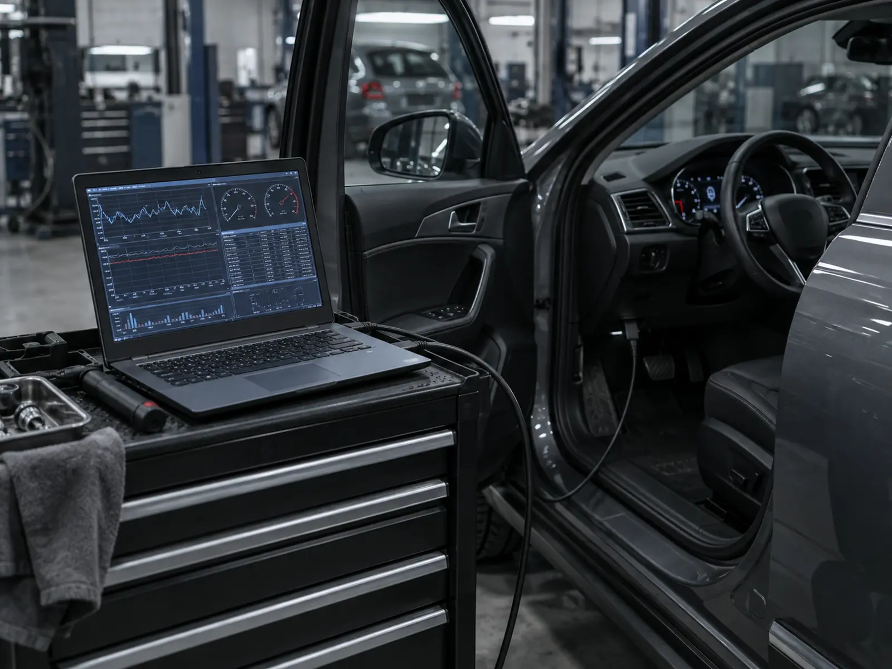
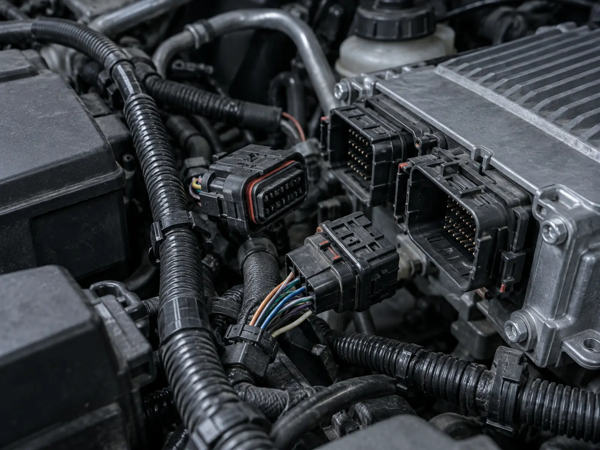

Li Auto
- Приехал сзаполняется по реальному кейсу
- Проверилизаполняется по реальному кейсу
- Сделализаполняется по реальному кейсу
- Результатзаполняется по реальному кейсу
Проверяем электронные системы автомобиля, ошибки и связанные с ними параметры, чтобы определить причину неисправности.
Работаем с автомобилями с двигателем внутреннего сгорания, гибридами и электромобилями. Отдельно — Li Auto, ZEEKR, VOYAH, BYD и AVATR.

Когда нужна диагностика
Диагностика нужна, если:
Не обязательно заранее знать, что именно сломалось — достаточно описать симптомы.

Что проверяем
В зависимости от марки и модели проверяем:
Для Li Auto, ZEEKR, VOYAH, BYD и AVATR используем оборудование и программные решения для диагностики этих марок.
Не просто считываем код ошибки
Один код ошибки не всегда показывает, какую деталь нужно менять.
Проблема может быть связана с датчиком, проводкой, электронным блоком, механической частью или взаимодействием нескольких систем.
Поэтому после считывания ошибок проверяем связанные параметры и сопоставляем их с симптомами автомобиля.

Что получает клиент
По результатам диагностики объясняем:
Если ремонт можно выполнить в Evolution Car Service — согласовываем дальнейшие работы и стоимость.
Диагностика по маркам
L6, L7, L8, L9 и другие поддерживаемые версии.
Сервис Li Auto ZEEKRДиагностика, обслуживание, механические и программные работы.
Сервис ZEEKR VOYAHОбслуживание электрических и гибридных моделей.
Сервис VOYAH BYDДиагностика и обслуживание электрических и гибридных автомобилей.
Сервис BYD AVATRДиагностика, техническое обслуживание и доступные программные работы.
Сервис AVATRЕсли проблема не только в электронике
Если причина находится в механической части или требуется замена детали, можем продолжить работу в сервисе.
Стоимость диагностики
Цена зависит от автомобиля и необходимого объёма проверки.
Если требуется углублённый поиск неисправности, объём дальнейшей диагностики согласовывается отдельно.
Практика сервиса


Напишите марку, модель и опишите, что происходит с автомобилем. Подскажем, с какой диагностики лучше начать.
Частые вопросы
Нет. Достаточно описать симптомы или показать ошибку, которая появилась на автомобиле.
Сначала важно понять причину её появления. Удаление ошибки без проверки не означает, что неисправность устранена.
Зависит от автомобиля и задачи. Простая проверка и поиск сложной неисправности требуют разного времени.
Нет. После проверки вы получите информацию о найденной проблеме и сможете принять решение о дальнейших работах.
Да. Работаем с автомобилями с двигателем внутреннего сгорания, гибридами и электромобилями.
Другие услуги

Плановое ТО с заменой необходимых расходных материалов и проверкой состояния автомобиля.
Подробнее
Диагностика и ремонт элементов подвески и ходовой части.
Подробнее
Обслуживание и ремонт тормозов, замена колодок, дисков и других элементов.
Подробнее
Диагностика электронных систем, блоков и связанных между собой компонентов.
Подробнее
Работа с доступными программными функциями: обновления, настройки, интернет, приложения.
Подробнее
Адаптация интерфейса автомобиля для поддерживаемых марок и версий ПО.
Подробнее
Подбор и поставка деталей и расходных материалов для обслуживания и ремонта.
ПодробнееНе нашли нужную работу? Напишите марку, модель и что требуется — подскажем, можем ли выполнить это в сервисе.
Написать намЗапись
Напишите марку, модель и что нужно сделать. Ответим и подскажем, с чего начать.
Если точная причина неисправности неизвестна — достаточно описать, что происходит с автомобилем. Подскажем, с чего начать: с осмотра, диагностики или конкретной сервисной работы.
Контакты
Перед визитом лучше записаться: так подготовим место на посту и заранее проверим, какие расходники понадобятся для вашей модели.